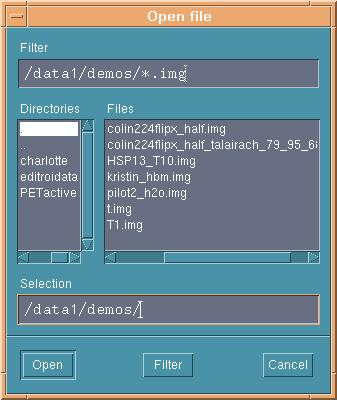
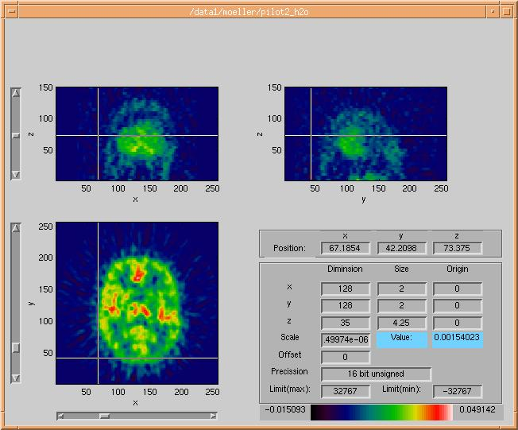
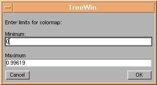

volView volume browser
volView is a matlab program, and is started from a
running matlab command prompt. Called without any parameters,
volView presents a file selection dialog for selection of an SPM
Analyze image:

Giving
volView a filename as parameter,
eg. volView('/data1/demos/T1'), will open the given SPM
Analyze fileset in the volume browser:

The Analyze header info is presented in the
lower right part of the volume browser.
The volView
volume browser is used for navigation and point selection within an
Analyze dataset. The coordinates of a point within the 3d datset
selects the three shown slices, and is selected by clicking the
slices, changing the value of the sliders or inputting the coordinates
directly to the three 'x', 'y' and 'z' boxes.
In light blue is showed the value of the current voxel.
By clicking the colorbar twice using the left mouse button, the user
is able to change the current colormap by use of the colormap menu. Clicking the colorbar twice using the
right mouse button will enable the user to enhance contrast in the colormap
by changing colormap limits:

End of volView
info page.